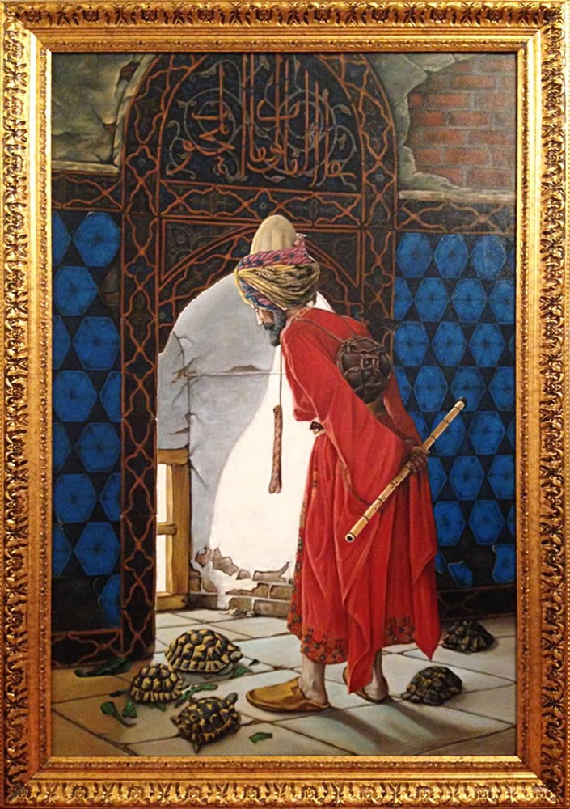

Merhaba. Ben Sinem KOPUZ bilişim teknolojileri öğretmeniyim Kodluyoruz'un bu eğitimi sayesinde kendimi geliştirmeyi hedefliyorum.
Yağlı boya ve Toz pastel çalışmaları yapıyorum
Kaplumbağa Terbiyecisi, Osman Hamdi Bey'in 1906 ve 1907 yıllarında iki farklı versiyonunu çizdiği tablosudur.